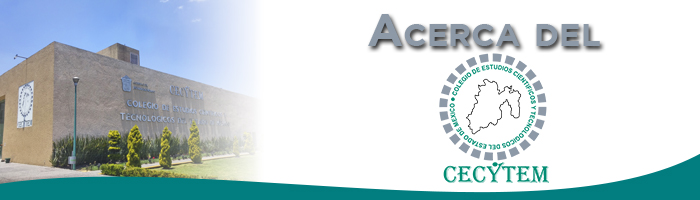

COLEGIO DE ESTUDIOS CIENTIFICOS Y TECNOLOGICOS DEL ESTADO DE
MEXICO PLANTEL IXTLAHUACA
jorge Moreno Garcia
Grupo:402 Num de lista:21
Elaborado por:jorge Moreno Garcia
fecha de Elaboracion: 19 de enero de 2024.Hora:8:36 p.m.
cecytem

El Colegio de Estudios Científicos y Tecnológicos del Estado de México (CECyTEM), es una institución de principios y valores que comparte la visión de que la educación dignifica a las personas y es el motor del crecimiento económico y social.
El CECyTEM brinda servicios educativos de nivel medio superior, con el propósito de que nuestros estudiantes desarrollen sus capacidades científicas y tecnológicas. Desde su creación en 1994, ha seguido un proceso de fortalecimiento y mejora continua, a la fecha contamos con 60 planteles ubicados estratégicamente en nuestra entidad.
Nuestros planes de estudio de carácter bivalente, abren la posibilidad de que los egresados cuenten con educación tecnológica terminal que les permita incorporarse a una actividad productiva, o bien, continuar sus estudios de nivel superior.
Con firme decisión enfrentamos los retos actuales: Elevar la calidad educativa, ampliar la cobertura social y territorial, innovar y diversificar la oferta educativa y promover la vinculación escuela-empresa para fortalecer la empleabilidad de nuestros estudiantes.
El CECyTEM tiene por objeto impartir educación media superior terminal, terminal por convenio y bivalente de carácter tecnológico; promover un mejor aprovechamiento social de los recursos naturales y contribuir a su utilización racional; reforzar el proceso enseñanza-aprendizaje con actividades curriculares y extracurriculares debidamente planeadas y ejecutadas; promover y difundir la actitud crítica derivada de la verdad científica, la previsión y búsqueda del futuro con base en el objeto de nuestra realidad y valores nacionales, promover la cultura estatal, nacional y universal, especialmente la de carácter tecnológico; y, realizar programas de vinculación con los sectores público, privado y social que contribuyan a la consolidación del desarrollo tecnológico y social del ser humano.
Para el inicio de operaciones del CECyTEM, la Secretaría de Educación Pública y el Gobierno del Estado de México acordaron crear, en su primera etapa de crecimiento, cuatro planteles en los municipios de Valle de Chalco Solidaridad, Chimalhuacán, Ecatepec y Nicolás Romero.
HISTORIA
El Colegio de Estudios Científicos y Tecnológicos del Estado de México (CECyTEM), es una institución de principios y valores que comparte la visión de que la educación dignifica a las personas y es el motor del crecimiento económico y social.
El CECyTEM brinda servicios educativos de nivel medio superior, con el propósito de que nuestros estudiantes desarrollen sus capacidades científicas y tecnológicas. Desde su creación en 1994, ha seguido un proceso de fortalecimiento y mejora continua, a la fecha contamos con 60 planteles ubicados estratégicamente en nuestra entidad.
Nuestros planes de estudio de carácter bivalente, abren la posibilidad de que los egresados cuenten con educación tecnológica terminal que les permita incorporarse a una actividad productiva, o bien, continuar sus estudios de nivel superior.
Con firme decisión enfrentamos los retos actuales: Elevar la calidad educativa, ampliar la cobertura social y territorial, innovar y diversificar la oferta educativa y promover la vinculación escuela-empresa para fortalecer la empleabilidad de nuestros estudiantes.
Te invitamos a formar parte de nuestra comunidad estudiantil para construir un Estado de México más fuerte.
El Gobierno Federal, a través de la Secretaría de Educación Pública, y el Gobierno del Estado de México firmaron, el 15 de septiembre de 1994, un Convenio de Coordinación para la Creación, Operación y Apoyo Financiero del Colegio de Estudios Científicos y Tecnológicos del Estado de México (CECyTEM), a fin de contribuir a impulsar y consolidar los programas de educación media superior tecnológica en la entidad.
Derivado del Convenio, el Gobierno del Estado efectuó las acciones jurídicas necesarias para la creación del mencionado Colegio, por lo que la H. “LII” Legislatura del Estado emitió, mediante el decreto No. 48, la Ley que crea el Organismo Público Descentralizado de Carácter Estatal denominado Colegio de Estudios Científicos y Tecnológicos del Estado de México (CECyTEM), con personalidad jurídica y patrimonio propios. Este decreto se publicó en el periódico oficial “Gaceta del Gobierno“, el 19 de octubre de 1994.
El CECyTEM tiene por objeto impartir educación media superior terminal, terminal por convenio y bivalente de carácter tecnológico; promover un mejor aprovechamiento social de los recursos naturales y contribuir a su utilización racional; reforzar el proceso enseñanza-aprendizaje con actividades curriculares y extracurriculares debidamente planeadas y ejecutadas; promover y difundir la actitud crítica derivada de la verdad científica, la previsión y búsqueda del futuro con base en el objeto de nuestra realidad y valores nacionales, promover la cultura estatal, nacional y universal, especialmente la de carácter tecnológico; y, realizar programas de vinculación con los sectores público, privado y social que contribuyan a la consolidación del desarrollo tecnológico y social del ser humano.
Para el inicio de operaciones del CECyTEM, la Secretaría de Educación Pública y el Gobierno del Estado de México acordaron crear, en su primera etapa de crecimiento, cuatro planteles en los municipios de Valle de Chalco Solidaridad, Chimalhuacán, Ecatepec y Nicolás Romero.
Con base en lo anterior, la entonces Secretaría de Administración del Gobierno del Estado de México aprobó, en noviembre de 1994 la primera estructura de organización del CECyTEM, la cual se conformó por siete unidades administrativas (una dirección general, una contraloría interna, dos direcciones de área y tres departamentos). Asimismo, consideró en la estructura los cuatro planteles antes mencionados.
Cabe destacar que el crecimiento y consolidación de la estructura de organización del Colegio está directamente relacionado con el incremento de la matrícula escolar, las necesidades de educación media superior que demanden los municipios de la entidad, y la aportación presupuestal que asignen el Gobierno Federal y el Gobierno Estatal, al Colegio.
Por lo anterior, el CECyTEM modificó su estructura de organización en el mes de noviembre de 1995, a fin de incrementar de cuatro a nueve el número de planteles en operación. Los municipios que se beneficiaron con la creación de los cinco Planteles adicionales fueron: Cuautitlán Izcalli, La Paz, Toluca, Tecámac y Metepec.
La tercera modificación a la estructura de organización del CECyTEM fue en noviembre de 1996, por medio de la cual se incrementó de siete a diez unidades administrativas centrales (una dirección general, una contraloría interna, dos direcciones de área y seis departamentos), y de 9 a 17 planteles. Las unidades administrativas de nueva creación fueron los Departamentos de Control Escolar, de Recursos Materiales y de Planeación, siendo necesario, también, el cambio de denominación de la Dirección de Planeación, aprobada en 1994, por Dirección de Administración, toda vez que las funciones de planeación las asumiría el Departamento creado exprofeso.
Del mismo modo, los ocho planteles de nueva creación se establecieron en los municipios de Ixtlahuaca, Coatepec Harinas, Tenancingo, Chicoloapan, Coacalco, Ixtapaluca, Nezahualcóyotl y Tultitlán.
La cuarta modificación a la estructura de organización se llevó a cabo en noviembre de 1998, en la cual se incrementaron de 10 a 12 unidades administrativas: una Dirección General, una Contraloría Interna, dos Direcciones de Área y ocho Departamentos, al crearse los Departamentos de Informática y de Recursos Financieros.
Asimismo, se crearon cuatro planteles ubicados en los municipios de Zacazonapan, Aculco, Villa del Carbón y San Felipe del Progreso, por lo que el CECyTEM pasó de 17 a 21 planteles.
Posteriormente, en enero de 1999 se autorizó una estructura de organización que contempló las mismas unidades administrativas autorizadas en noviembre de 1998, pero que formalizó la existencia de cinco Planteles más en los municipios de Atlautla, Temascaltepec, Malinalco, Jilotepec y Xonacatlán. Por lo anterior, el Colegio tuvo a su cargo, hasta esa fecha, 26 planteles.
En junio de 2000, la entonces Secretaria de Administración autorizó al CECyTEM una estructura de organización, la cual se integró por 17 unidades administrativas (una dirección general, una unidad jurídica, una contraloría interna, cuatro direcciones de área y 10 departamentos); asimismo, se formalizo la creación de cinco Planteles más, los cuales fueron en los municipios de: Nezahualcóyotl II, Tenango del Valle, Tequixquiac, Villa Victoria y Ecatepec II, contando el Colegio con un total de 31 planteles.
En enero de 2002, se autorizó al organismo por parte de la Secretaría de Administración una nueva estructura de organización, en la cual se consideró las unidades administrativas autorizadas en junio de 2000, además, se formalizó la existencia de cuatro Planteles más en los municipios de Ixtapaluca, Jiquipilco, Sultepec y Tepotzotlán, por lo que el número de Planteles del organismo se incrementó a 35.
En noviembre de 2003 la entonces Secretaría de Finanzas, Planeación y Administración autorizó un Plantel más en el municipio de Tultepec, por lo que el Colegio pasó de 35 a 36 Planteles regionales y, en noviembre de 2004, autorizó dos Planteles más el de Nicolás Romero II y el de San Felipe del Progreso, sumando un total de 38 Planteles en el territorio estatal.
Derivado de la demanda cada vez más creciente de los servicios que oferta el Colegio, en enero de 2006 la Secretaría de Finanzas autorizó una nueva estructura de organización, la cual consistió en la creación de dos Planteles: el de Chalco y el de Valle de Chalco Solidaridad II, quedando conformada su estructura de organización por 17 unidades administrativas: una Dirección General, una Unidad Jurídica, una Contraloría Interna, cuatro Direcciones de Área y 10 Departamentos, así como por 40 Planteles regionales.
En julio de 2007 la Secretaría de Finanzas autorizó al CECyTEM una nueva estructura de organización, la cual consistió en la creación de un Plantel en el Municipio de Villa de Allende, por lo cual la estructura de esta Institución educativa quedó conformada por las mismas 17 unidades administrativas y por 41 Planteles.
Asimismo, día a día se incrementa la demanda en el Estado de México y la zona conurbada de la juventud que solicita los servicios educativos en todos sus niveles y modalidades, por lo que el Gobierno Federal y el Gobierno del Estado de México se han dado a la tarea de impulsar la creación y desarrollo de instituciones de educación que diversifiquen sus opciones para atender las características y condiciones regionales; por otra parte, la dinámica de la administración pública estatal hace necesario modernizar las estructuras de organización de las dependencias y organismos auxiliares, a fin de dotarlas de mayor capacidad para ejecutar sus planes, proyectos y procesos de trabajo. Por ende, es preciso ampliar la cobertura de la educación superior y vincular estos servicios educativos del nivel con el aparato productivo de la región donde se ubiquen.
Por lo anterior, el 26 de noviembre de 2008, la Secretaría de Finanzas autorizó a esta Institución educativa la creación de cuatro Planteles más, ubicados en los Municipios de Ixtapan de la Sal, Donato Guerra, Jocotitlán y Tezoyuca. Así, la estructura de organización de este organismo descentralizado quedó integrada por 17 unidades administrativas: una Dirección General, una Unidad Jurídica, una Contraloría Interna, cuatro Direcciones de Área y 10 Departamentos, así como por 45 Planteles.
Derivado de la demanda cada vez más creciente de los servicios educativos de nivel medio superior, la Secretaria de Finanzas en febrero de 2011 autorizó a este Organismo Descentralizado la creación de un Plantel ubicado en el Municipio de Metepec, quedando integrada la estructura orgánica por 17 unidades administrativas: una Dirección General, una Unidad Jurídica, una Contraloría Interna, cuatro Direcciones de Área y 10 Departamentos y por 46 planteles.
Asimismo, en abril de 2013 la Secretaria de Finanzas autorizó a esta Institución educativa, la creación de tres Planteles, los cuales se ubicaron en los Municipios de Tejupilco, Lerma y Texcoco, con lo cual la estructura orgánica del Colegio quedó conformada por 17 unidades administrativas (una Dirección General, una Unidad Jurídica, una Contraloría Interna, cuatro Direcciones de Área y 10 Departamentos), así como por 49 planteles.
En diciembre de 2013 la Secretaría de Finanzas autorizó a este Organismo Descentralizado una reestructuración administrativa, la cual consistió en la creación de dos subdirecciones y un departamento, el cambio de nivel jerárquico de un departamento a subdirección; el cambio de denominación de dos y la readscripción de dos, así como la creación de siete Planteles en los Municipios de Nicolás Romero, Chimalhuacán, Cuautitlán, Temascalapa, Huixquilucan, Acambay y Valle de Bravo. Así, el organigrama de la estructura de organización de este organismo descentralizado quedó conformada por 20 unidades administrativas: una Dirección General, una Unidad Jurídica, una Contraloría Interna, una Unidad de Informática, cuatro Direcciones de Área, tres Subdirecciones y nueve Departamentos, así como por 56 planteles.
Con esta estructura de organización, el Colegio da respuesta a sus programas institucionales, permitiéndole llevar a cabo sus funciones sustantivas para el logro de sus objetivos, así como para elevar e incrementar la calidad de la educación media superior terminal, terminal por convenio y bivalente de carácter tecnológico, que permitan la incorporación de las egresadas y egresados al sector productivo y, en su caso, a estudios posteriores.
Debido al crecimiento natural de la población en el Estado de México ha aumentado la demanda para ingresar y estudiar las carreras técnicas que ofrece el Colegio por medio de los Planteles ubicados en la zona geográfica de su competencia, por lo cual en febrero de 2016 la Secretaria de Finanzas autorizó a esta Institución educativa una nueva estructura de organización, la cual consistió en la creación del Departamento de Servicios Generales, cambiar el nivel jerárquico de la Unidad de Informática y cambiar la denominación de un departamento, así como la creación de cuatro Planteles en los municipios de Almoloya de Juárez, Zinacantepec, Ecatepec y Toluca para que su organigrama quedara conformado por 21 unidades administrativas: una Dirección General, tres unidades staff de Dirección General, cuatro Direcciones de Área, tres Subdirecciones y 10 Departamentos, así como por un total de 60 Planteles.
Asimismo, el CECyTEM consideró procedente actualizar los objetivos y funciones de las unidades administrativas que lo integran, a fin de dar cumplimiento y atención a la Norma Mexicana NMX-R-025-SCFI-2015 en Igualdad Laboral y No Discriminación, así como para dar respuesta a las necesidades que la misma dinámica educativa va exigiendo y por ende, estar a la vanguardia para seguir logrando los objetivos, metas, proyectos y programas establecidos en su plan de trabajo.
El modelo académico y educativo del Colegio se orienta a la innovación en los campos de la organización curricular interdisciplinaria que impulsa la investigación vinculada con la producción y bienestar social. El plan de estudios implementado en este organismo tiene una duración seis semestres para cada una de las carreras que ofrece.

Misión
Impartir educación media superior de calidad, en su modalidad de bachillerato tecnológico bivalente, con el objeto de que los egresados cuenten con educación tecnológica terminal que les permita incorporarse a una actividad productiva, o bien, continuar sus estudios de nivel superior.
Visión
Ser la mejor opción en educación media superior en su modalidad de bachillerato tecnológico bivalente en el Sistema Nacional de los CECyTE’s, así como en el Estado de México.
PRIVACIDAD
Política de privacidad y contenidos en medios sociales:
El CECyTEM tiene páginas o cuentas oficiales en varios sitios web de terceros como Twitter y Facebook con el fin de lograr una mayor participación y ofrecer orientación a los ciudadanos mexiquenses acerca de los trámites, servicios y programas.
Los comentarios de los usuarios en estos sitios de terceros son libres, aunque el CECyTEM solicita a los usuarios no publicar ningún material que se encuentran en ninguna de las siguientes categorías y se reserva el derecho de eliminar cualquier material que pueda:
1. Difamar, abusar, acosar, acechar, amenazar o violar los derechos legales (como los derechos de privacidad) de otros.
2. Publicar, anunciar, distribuir o difundir cualquier material difamatorio, ilegal, obsceno, engañoso o ilícito.
3. Cargar o adjuntar archivos que contengan software u otro material protegido por leyes de propiedad intelectual (o derechos de privacidad o publicidad) a menos que usted posea o controle dichos derechos o haya recibido todos los consentimientos necesarios, y esto se pueda demostrar.
4. Cargar o adjuntar archivos que contengan virus, archivos corruptos, o cualquier otro software o programas que puedan dañar la operación del computador de otro.
5. Incumplir con cualquier atribución de autor, avisos legales o designaciones de propiedad o etiquetas en cualquier contenido publicado en los medios sociales.
6. Presente lenguaje ofensivo, que impida la comunicación respetuosa.
7. Cuando el contenido sea reiterativo a pesar de que ya haya sido atendido por el administrador.
8. Contengan propaganda informativa, partidista o comercial con el fin de atraer adeptos o compradores.
En ningún caso y sin ninguna excepción los canales oficiales de comunicación del CECyTEM estarán supeditados a intereses particulares, de asociaciones, organizaciones civiles o agendas informativas de empresas privadas, dejando de lado la neutralidad en el trato a toda la información relevante para los ciudadanos, es por ello que se tienen criterios editoriales para mantener la calidad de la información presentada.
El acceso y publicación en las cuentas oficiales del CECyTEM se podrá restringir a los usuarios que en más de una ocasión incumplan lo anteriormente expuesto.
Los comentarios, imágenes, videos u otro tipo de material publicado por los usuarios de las cuentas en medios sociales del CECyTEM no reflejan las opiniones o los ideales del Colegio ni sus servidores públicos.
La actividad de los usuarios en sitios de terceros se rige además por las políticas de seguridad y privacidad de los sitios de terceros, por lo que se sugiere conocerlas. Además se recomienda ajustar la configuración de privacidad para que coincida con sus preferencias.
La información publicada por usuarios en las cuentas de sitios de terceros puede ser tratada como información pública y puede usarse para recopilaciones de comentarios. El CECyTEM no vende, alquila, intercambia o divulga de ningún modo información a terceros. En caso de que solicite asistencia, compartiremos su información con las áreas correspondientes con el propósito limitado de responder a su solicitud.
Política de transparencia:
El acceso a la información bajo procedimientos sencillos, claros y precisos, es un aspecto central que permite a los ciudadanos participar en los asuntos públicos de manera consciente y responsable, además de impulsar al mismo tiempo una cultura de transparencia en el servicio público.
La Ley de Transparencia y Acceso a la Información Pública del Estado de México y Municipios, garantiza el derecho Constitucional de acceso a la información. Las disposiciones de esta Ley son obligatorias para todos aquellos que manejan información pública y datos personales.
Si deseas conocer mas te invitamos a que visites el apartado dando clic aqui.
Modificaciones a esta Política:
El Colegio puede realizar modificaciones a esta normativa. Si los cambios que realizamos son importantes y afectan directamente al uso que le damos a la información personal de nuestros usuarios, se los haremos saber mediante un aviso destacado en el portal cecytem.gob.mx.
Última revisión y actualización de los Avisos Legales: Última revisión y actualización de los Avisos Legales: 20 de Junio de 2018.
|